Malgré tout ce qu'on peut en penser, l'internat reste un très bon souvenir. Une ambiance géniale, une entraide permanente pour les DM et les TD (un peu trop au goût de certaines personnes d'ailleurs mais qu'on ne nommera pas ici pour préserver leur anonymat), des douches froides, des toilettes nickels, une nourriture riche et équilibrée etc... Honnêtement, il y a les internes et ceux qui ne le sont pas. Et la différence est énorme. En tout cas, plein de photos et de souvenirs à déguster...
Amis internes, nous attendons quelques textes de votre part, pour avoir vos témoignages sur l'internat, comment vous avez vécu cette année, les points positifs et les points négatifs. Ma foi ceux qui ont des photos sont les bienvenues également.
Envoyez vos dons à : PTSK et Morpheus, chambres 412 et 408, lycée Pothier, 45 000 Orléans. Euh non c'est pas ça. Envoyez vos textes à l'adresse du site que vous trouverez dans la barre à gauche de votre écran (# c'est marqué e-mail, c'est pas dur). Merci. Enfin pour les dons on est pas contre non plus...
Petites explications et mode d'emploi
| 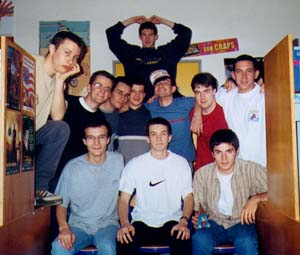 |
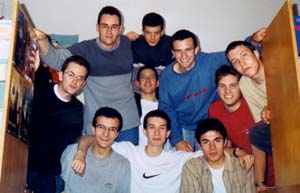 |
| Bon allez je cite tout le
monde ! Alors sur la photo de gauche, celui qui fait le con en haut, c'est Pépé.
Ensuite de gauche à droite et de haut en bas : Simon, Alain, Patou, Malawi,
Krophète, Mia, Bébert, Morpheus, PTSK et Dublack. Le petit en rouge
qui est venu s'ajouter sur la photo de droite, c'est Pascal. Comme ça les
présentations sont faites ! | |
| 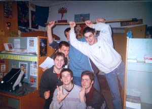 | Un vendredi midi. Comme on peut le voir, ambiance studieuse pour réviser le DS. |
| Bon alors là, c'est les même qu'au dessus. A part la demoiselle qui est en plus et qui se prénomme Marie. C'était le dernier jour de l'année... |
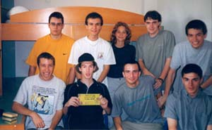 |
| 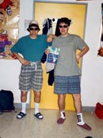 | Là c'était quelques minutes avant le dernier DS de l'année. Plusieurs d'entre nous y sont allés en parfait petit touriste. Même si l'un des deux de la photo s'est dégonflé... Je sais pas si je dois dire qui c'est. Allez non, on va pas lui foutre la honte. Donc demandez leur si vous voulez savoir ! |
| La photo parle d'elle-même... Ces deux forces de la nature que rien ne semble pouvoir ébranler. Terrifiant. Avec eux personne ne passait. C'était des pros. Merci les gars de nous avoir protégé pendant un an. On les pschhhhhhhit ! Cette photo a été prise le dernier jour de l'année. On peut le voir à l'indice subtil en bas à droite : le fil de l'aspirateur. Et oui il a été passé seulement le dernier jour ! |
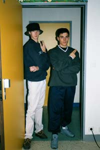 |
| 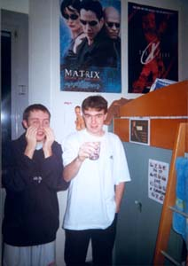 |
A la tienne Damien ! Et Simon... ben euh... T'es sûr que ça va ? Là on est dans la chambre 315. La magnifique chambre 315 ! Chambre qui a eu pas mal de nominations à la réunion de l'internat. Moins que les bios mais ils étaient imbattables cette année là. Il existe aussi une légende sur la 315. Mais attention ce n'est qu'une légende ! Certains racontent qu'un midi, toute la classe était en 315 pour... biiiiiiiip le jour de l'anniversaire de Krophète. Allez, on en dira pas plus. Mais bravo les gars ! |
|
Un adjectif à la taille de la chambre 316 : mythique. Malawi et Morpheus, les deux petits Sup3 qui y vivaient l'ont rendu ainsi. Vers le mois de novembre environ, ils ont eu l'idée de collectionner les canettes, de toute sorte. Après avoir essayé diverses constructions (tours, pyramides etc...) ils ont pensé à faire deux murs, un chacun. Mais pas n'importe comment, le but était de dessiner un motif sur ce mur grâce aux différentes couleurs des canettes. Finalement, Malawi choisit d'y inscrire "HX3 208" et Morpheus "Sup 3". On peut voir ci-contre le mur de Malawi presque achevé. Hélas, nous ne possédons pas de photos de l'œuvre finie, et aucune du mur de Morpheus. Mais on vous assure qu'ils ont été fait complètement, vous pouvez demandez aux HX3 208. Ca n'a pas l'air comme ça, mais il faut plusieurs heures pour monter un mur comme celui ci et 5-6 personnes sont nécessaires à la construction du mur, qui s'est faite colonne après colonne. Chacun de ses murs était constitué de 13 colonnes de 15 canettes. Près de 400 canettes ont ainsi été nécessaires pour les deux murs. |
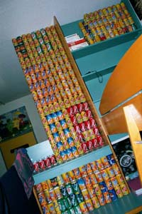 |
| En fin d'année, pour mieux se rendre compte de la quantité de canettes accumulées, ils ont fait une pyramide. Au total, tenez vous bien : plus de 730 canettes !!! | |
|
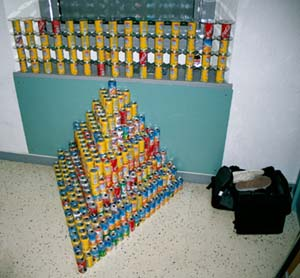 |
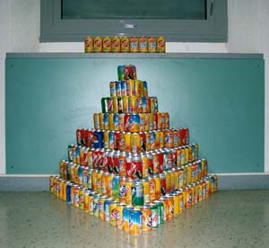 |
| On peut voir une vue d'ensemble en dessous. Et à droite c'est le rangement des canettes, la dernière semaine de l'année, après avoir donné de grands coups de pied dans la pyramide. Ils ont remplis deux poubelles de plus de 100L. Ca a fait un bordel monstre pendant plus d'une heure ! On peut également voir à gauche de la photo, Celcius, masquotte de la 316. C'est une grande histoire aussi. Tout comme le poster des Télétubbies (# on peut le voir sur la première photo du mur). Ce poster, haut en couleur, est resté accroché à la fenêtre de la chambre, le motif coté cour, pendant 7 ou 8 mois. Il a même été nominé à la réunion de l'internat ! Désormais, depuis cette année, il est écrit dans le règlement de l'internat que l'affichage sur les vitres est interdit. Merci la 316 ! | |
| 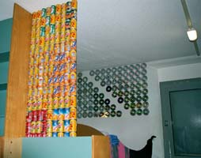 |
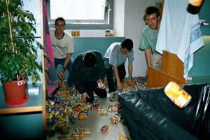 |
| Et comme les canettes ne
leur suffisaient pas, ils ont collectionné les CD : les CD gratuits de
connexion pour internet par exemple. Au total près de 150 CD tout de même
! Ca sert à rien de les compter sur la photo, ils y sont pas tous. |
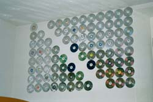 |
| 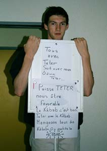 |
Notre Pépé. Appelé comme ça depuis le début de l'année car il est le doyen des HX3 208. Et tout dans son comportement est assez proche d'un pépé on va dire. Pour des raisons qu'on ne citera pas ici parce que ça serait trop long (# et aussi parce que je me ferais tuer par pépé dans la seconde), plusieurs personnes le vénéraient. Téter, c'est aussi comme ça qu'on l'appelle, est considéré comme un Dieu vivant. Ils sont tous à genoux devant lui ! Sur la photo, Pépé porte quelques unes des affiches qui ont été posées dans le lycée à son honneur. |
| Et voilà ! Encore un exemple ! Un interne externé qui vient à l'internat et qui empêchent les gentils internes de travailler. Pourtant Malawi fait tout ce qu'il peut pour le virer de la chambre ! | 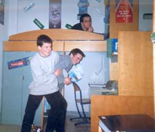 |
| 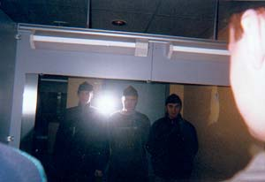 | La lumière du génie Sup3 brille de mille feux... |
| Mia et Simon en direct des douches. Oui je sais, cette photo n'est pas intéressante mais bon ça donne une vague idée de l'allure des douches... |
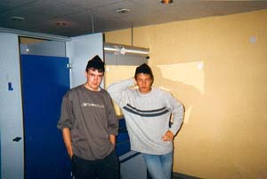 |
| 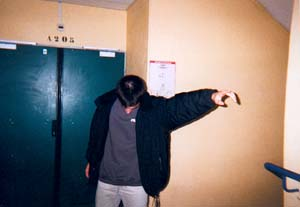 | Dieu en personne... Tout simplement ! |
|
Cécile s'est fait de jolis tatouages... 222's cocottes qu'on voit écrit sur la feuille c'est sa collocataire et elle. 222 car c'est le numéro de leur chambre et cocotte ça vient du fait qu'elle se couchent tôt comme les poules ! | 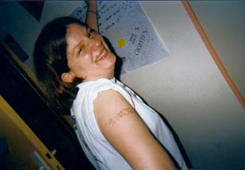 |
| 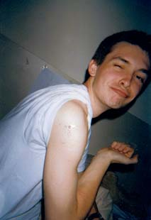 | PTSK fait son rebelle et se fait plein de tatouages ! Il devait être frais lui encore ce jour là ! |
| Une p'tite photo de groupe pour finir ! J'osais pas le dire mais... on est tous beau là dessus ! Bon d'accord ça se voit pas au premier coup d'oeil mais bon... |
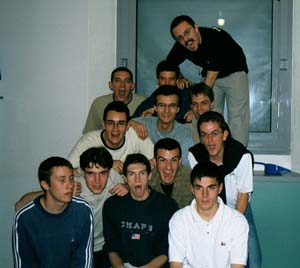 |
| Et maintenant : la soirée Beaujolais 2001-2002 ! Le principe est très simple. Des bouteilles de Beaujolais de différentes marques sont réparties dans quelques chambres. Deux sortes de Beaujolais par chambre. A ça il faut ajouter du pain, du saucisson et du camembert. Ensuite chacun passe avec son gobelet dans chacune des chambres et goûte les différentes sortes de Beaujolais qu'il évalue avec une note allant d'une à cinq étoiles. Je peux vous dire que le premier verre est noté à une étoile mais au bout de 4-5 verres, les notes sont nettement meilleures... Le vainqueur de cette année est le Beaujolais Village Nouveau 2001 ! Les photos qui suivent ont été prises juste après la soirée, c'est à dire dès qu'il n'y avait plus de bouteilles... Amis internes vous reconnaîtrez la chambre, les autres : tant pis ! | |
| 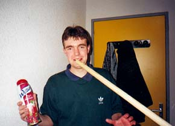 | Mia nous annonce le début de cette p'tite soirée Sup3 qui restera gravée dans beaucoups de têtes, en direct de la chambre biiiiiip! |
| 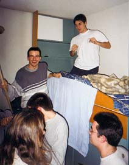 |
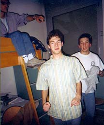 |
| 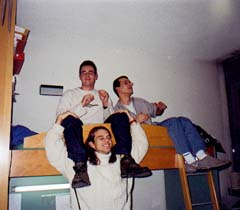 |
Coin coin coin coin ! Coin coin coin coin ! etc... Ah quel bonheur cette musique, et que de bons souvenirs ! Tout le monde danse ! Si si ! |
| PTSK, Tarzan (ex-sup1 mais
interne) et Krophète qui jouent avec l'appareil photo, on sent le professionalisme. |
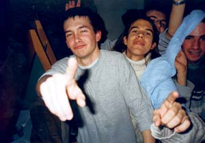 |
| 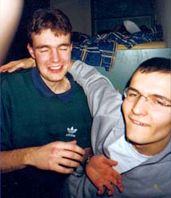 |
Et bien c'est du joli ! |
|
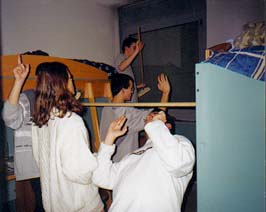 |
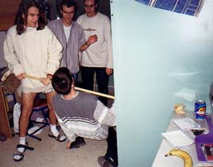 |
| Ca va c'est pas trop bas Patou ? Krophète a plus de mal par contre, mais je crois qu'il passe sans se casser la gueule. | |
| Morpheus fait du sport. Des pompes ça
peut pas faire de mal ! | 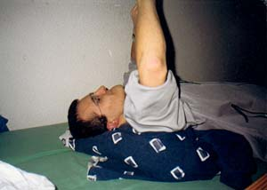 |
| 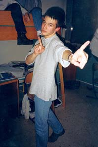 |
PTSK président ! PTSK président ! Il y a eu nombreuses rumeurs sur cette soirée à propos de notre cher ami. Tout le lycée a entendu parler de comment s'est passé cette célèbrissime soirée pour sa majesté PTSK. Et bien les rumeurs sont vraies, il nous a bien fait une danse du Limousin !!! Mais chut c'est un secret... |
| Une
photo de groupe, enfin on aurait du voir tout le monde mais la personne qui a
pris la photo a attendu trop longtemps et on était en train de se casser
la gueule, alors forcément... | 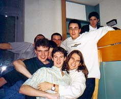 |